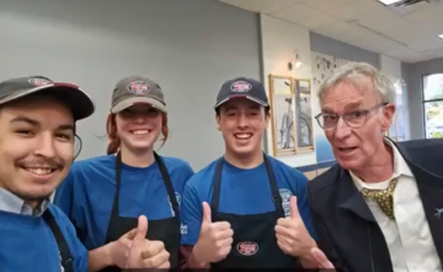
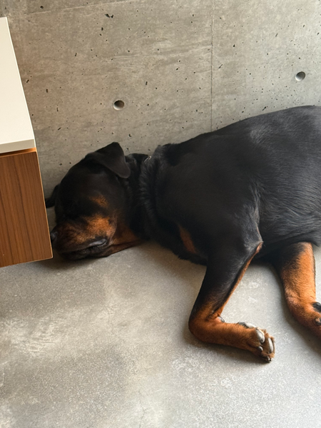
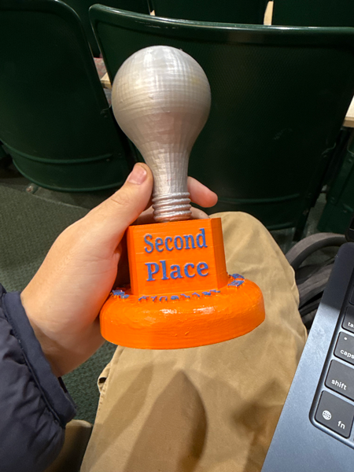

I worked at Jersey Mikes in my hometown for 2 years, I even got to meet Bill Nye as pictured. I was a shift lead and I enjoed my coworkers. As a HARDWORKING individual, I’ve had my fair share of jobs. Over the summer, I got my real estate license and work for my cousin (real estate agent) as an assistant.


This was the dog I dogsat for over the summer, his name was Wally and he was so silly. He didn't do much all day and was very slow.
As a Syracuse student, I have already experienced so much in terms of victory. I placed second in my 150+ person IST 195 class for my entrepreneurial idea, largely due to my INCREDIBLE idea. I received an A in this class. I have also taken IST 101 and received an A in this class as well.

This is a video that I filmed and edited along with my friend Jack.